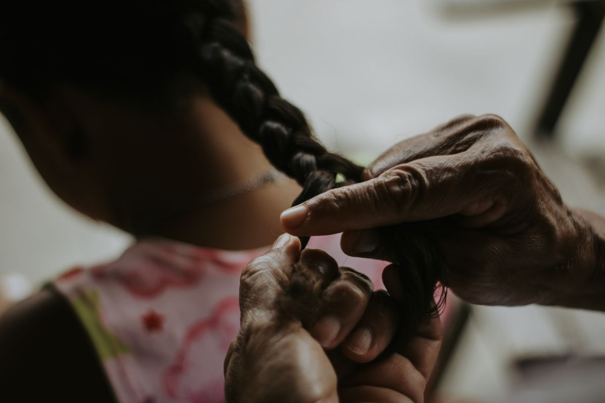
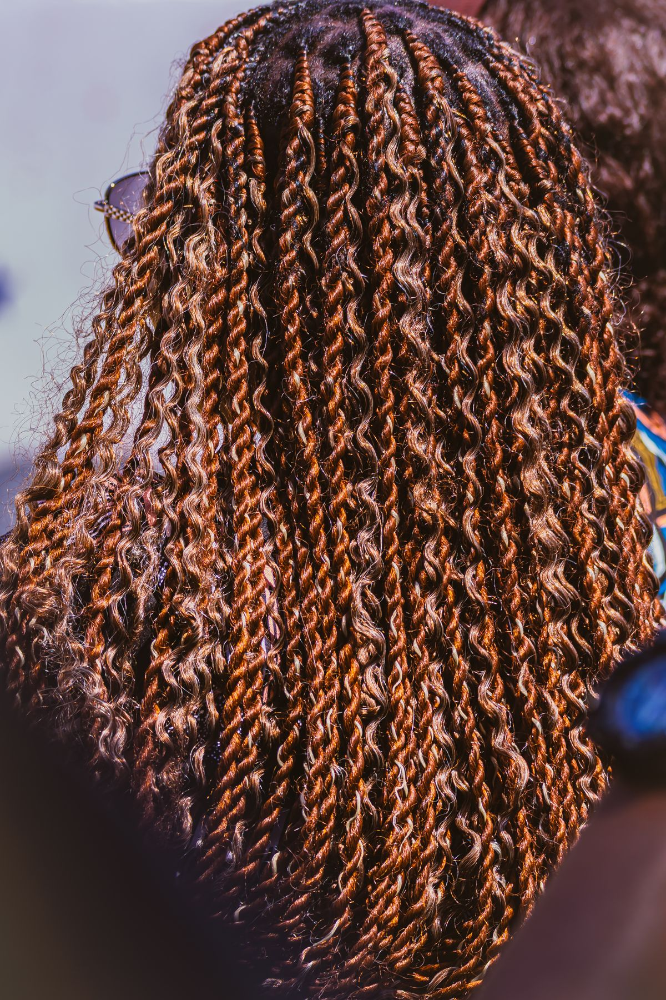
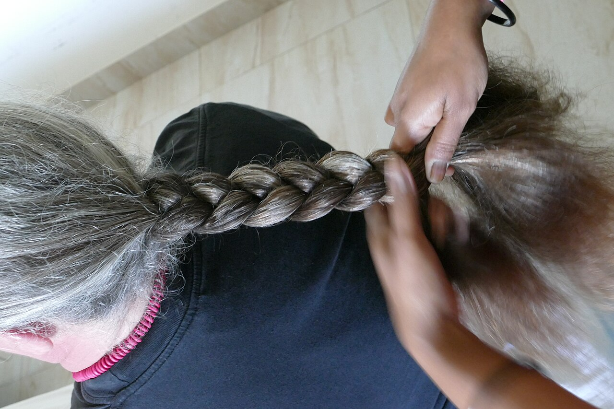
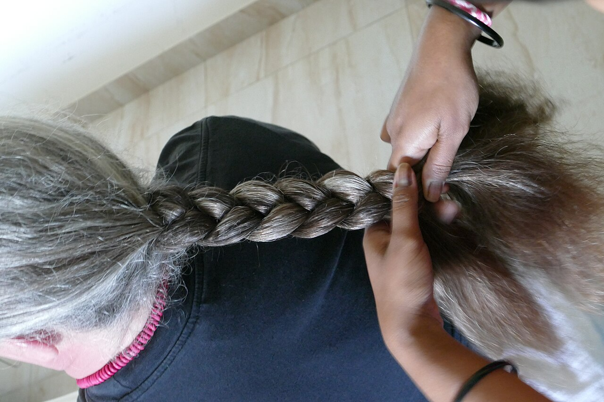
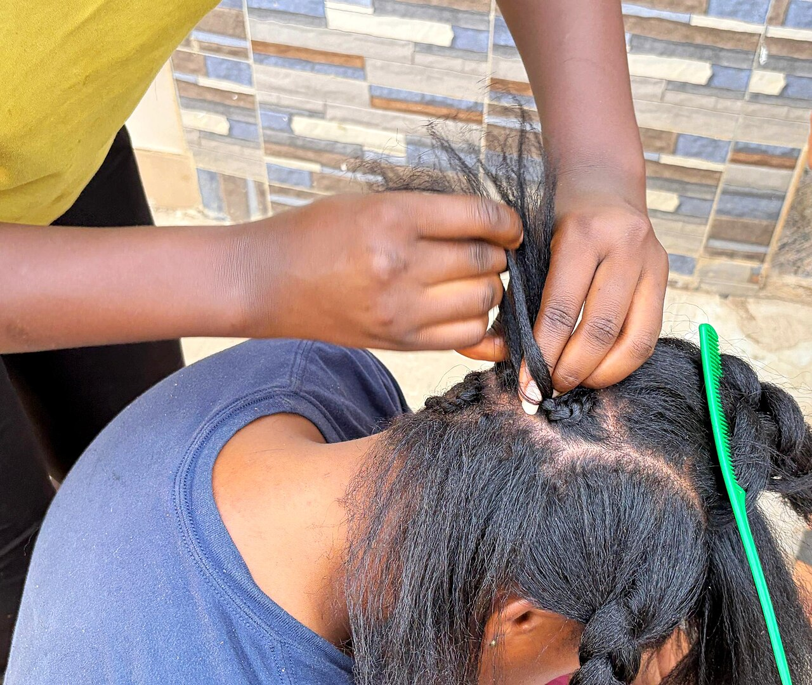

3 Sizes, 6 Hours, $25 Down: How Long Your Knotless Braids Take, Start to End
You booked the chair. Now you are doing the math in your head: can I still pick up my child at 4? Do I need the whole day off? Knotless braids are not a quick style, and any stylist who will not talk time with you is not being straight. This post gives you the real time picture: what sets the clock, honest ranges for each size, and how to walk in ready so not one hour is wasted.
Plan on about 3 to 4 hours for large parts, about 4 to 6 hours for medium parts, and about 6 to 8 hours or more for small parts. Longer length adds time at every size. These are typical ranges, not promises: your head, your hair, and your stylist's hands all move the clock. The $25 deposit holds your chair and goes in full toward your total.
What the video shows: The video shows a full set of medium knotless braids going in, from the first parts to the last braid. You can watch the feed-in start on each braid: the stylist begins with the client's own hair, then adds braiding hair in small pieces, so the braid grows smooth with no hard knot at the root. You can also see the true pace of the work: part, braid, feed, braid, braid after braid, row after row. It is the best way to feel why a medium set takes hours, not minutes. Watch the roots as each braid starts. That flat, easy start is the whole point of knotless.
What are knotless braids?
Knotless braids are box braids done with a feed-in start. Feed-in means the braiding hair is added bit by bit as the braid begins, instead of tied on in one knot at the root. Your own hair starts the braid. The added hair joins in, piece by piece.
Two good things come from that start. The braid lays flatter against your head. And it pulls less at the root on day one, which is when classic knot braids hurt most. The trade is time: feeding hair in, braid by braid, is slow, careful work.
Think of it like two ways to start a row of stitches. One way ties a knot and goes. The other weaves the thread in so the start is smooth and hidden. The smooth start looks and feels better. It also takes longer, every single row.

What sets the clock: parts, braids, and length?
Chair time comes from a simple count: how many braids go on your head, and how long each one is.
Part size sets the count. Large parts make fewer, thicker braids. Small parts make many, thin braids. A head of small parts can hold 100 braids or more. A head of large parts may hold a few dozen. Each braid takes its own minutes: part it, start it, feed it, braid it down, finish it. More braids, more minutes. That is the whole math, and no shortcut cuts it.
Let us work it with plain numbers, as an example. Say a medium braid takes about 5 minutes of hands-on work. A set of 60 braids is 60 × 5 = 300 minutes, which is 5 hours. A set of 100 small braids at the same pace is 100 × 5 = 500 minutes, which is over 8 hours. Your stylist's pace will differ, but the shape of the math will not: count drives time.
Length adds on top. A braid that ends at your shoulders is done sooner than one that ends at your waist. Every extra inch is extra passes of the hands, down every braid on your head.
How long does each size take, honestly?
Here are the ranges most clients see, stated as ranges because heads and hands differ:
- Large parts: about 3 to 4 hours. Fewer braids, thick and bold.
- Medium parts: about 4 to 6 hours. The middle road most clients pick.
- Small parts: about 6 to 8 hours, and some heads go past that. The most braids, the finest look, the longest day.
Add length, and each range can stretch. Waist-length small braids are a full-day plan, with breaks. Anyone who quotes you an exact finish time to the minute, days ahead, is guessing. A good stylist quotes a range and tells you what could move it.
Here is the same truth in a second picture. Think of painting a fence. Big wide boards: few boards, fast work. Thin pickets: many boards, slow work, finer look. Your parts are the boards. The paint is the same. The count is the day.

What eats time on the day?
Some hours are braid hours. Some are lost hours. Here is what eats the clock:
- Breaks. Hands rest, you rest, everyone eats. On a long set, breaks are part of the plan, not a flaw in it.
- Tangles. Hair that comes in tangled must be worked free, braid by braid.
- Prep done in the chair. Washing, drying, and detangling at the salon adds real time before braid one starts.
- Add-ons. Curls at the ends, beads, or a mix of styles each add their own steps.
- Changes mid-set. Swapping size or length halfway means undoing finished braids and starting rows again. Decide before braid one.
- Re-dos. A braid that comes out uneven gets taken down and done again. Good stylists do this on their own standard, and it costs minutes you are glad they spent.
None of these are bad. They are just time. Knowing them lets you plan your day with open eyes.

How do you come ready, so the clock works for you?
You hold one lever: the state of your hair when you sit down.
Come with your hair washed and clean. Come detangled, so a comb can pass. If your stylist asks for your hair blown out or stretched, do that the night before, or book the prep as part of the visit and count its time in your plan. Ask when you book: "How do you want my hair to come?" One short call can save an hour in the chair.
Eat before you come. Bring water and a snack for long sets. Bring something to watch or read that you can hold with one hand. And plan your ride home off the end of the range, not the start: if your set runs 4 to 6 hours, plan your day as if it ends at 6.
Checklist:
- Pick your part size and know its time range before you book
- Ask how your stylist wants your hair to arrive: washed, detangled, stretched
- Wash and detangle the night before, unless prep is booked at the salon
- Eat a real meal before a long set, and bring water and a snack
- Plan your ride and your day off the late end of the range
- Put the $25 deposit down to hold your chair time

What should you ask when you book?
Five questions, asked at booking, save most bad braid days:
- "For my head and this size, about how many braids will that be?" The count is the clock, and now you know why.
- "What is the time range for this size and length?" Listen for a range, not a single hard time.
- "How do you want my hair to come: washed, detangled, blown out?" Write the answer down and do it.
- "Are breaks part of a long set, and can I bring food?" A yes is normal. Plan your snacks.
- "What is the full price for this size and length?" Use the planner in the tool section below so the number holds no surprises.
Write the answers in your phone. On the day, there is nothing to guess: you know your window, your prep, your price, and your plan. Most chair-day stress is just un-asked questions. Ask them while the answers are still free.
One more booking truth: the chair you hold is a block of a working day. When you hold 6 hours, your stylist turns away other clients for those 6 hours. That is why the deposit exists, and why it is fair: your $25 holds real time, and it comes back to you in full against your total when you sit down.
How does booking and the deposit work?
KuuStore serves clients across Miami-Dade, Broward, and Palm Beach, and clients come to the salon for their appointments. When you book, a $25 deposit holds your chair. That $25 is not a fee on top. It applies in full toward your total on the day. It holds the hours we walked through in this post: a 5-hour block of a stylist's day, set aside for your head alone.
The address for your visit is given when your appointment is booked. Book, get your details, and plan your drive with the time ranges above in hand.
What are the honest limits of these time ranges?
Ranges are honest because heads are not copies. Thick hair, fine hair, a tender scalp that needs gentle pacing, a style with mixed sizes: each moves the clock. So does a stylist's speed, and speed is not a flaw. Careful hands are the ones you want at your roots.
If your day has a hard edge, like a flight or a shift, say so when you book. Your stylist can steer you to a size that fits your window, or split the plan in a way that keeps the style whole. The worst plan is the silent one: a small-parts dream on a 3-hour leash. Talk time first, and the day goes well.
One more honest note: some sets are done by two stylists working one head in turns or in halves. That can cut real time off a long set. It does not cut the count of braids, and the finish must still match from side to side, which takes its own care. If your salon offers it for a big set, it is a true time saver. If not, one pair of hands at a steady pace is the classic road, and it gets there the same day.

Your free tool for this step
Your free tool for this step is the Braid & Loc Price Planner, free at https://kuustore.life/braid-loc-price-planner.html. You pick your style, size, and length, and it shows you the price picture for your set before you book, so size, time, and cost sit in one view.
Use it like this:
- Open the planner and choose knotless braids.
- Pick the part size you want: large, medium, or small.
- Pick your length.
- Read the price the planner shows for that set.
- Set your time plan from this post's ranges for that same size, then book your chair.
What it does not do: it does not book the chair by itself, and it does not promise an exact finish time. Prices come from the planner, not from this post. The $25 deposit holds your time, and the planner plus these ranges help you choose a set your day can hold.
The bottom line
Knotless time is count time: more braids and more length mean more hours. Large parts run about 3 to 4 hours, medium about 4 to 6, and small about 6 to 8 or more, with length stretching each range. Come washed, detangled, and prepped the way your stylist asks, plan your day off the late end of the range, and let the $25 deposit hold your chair, applied in full to your total. A style this good is worth a day planned well.